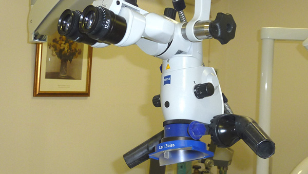
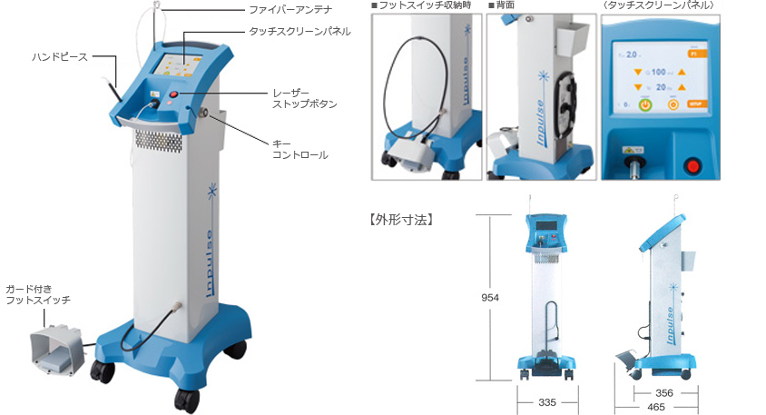
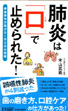
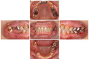
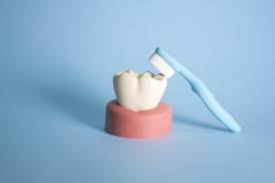
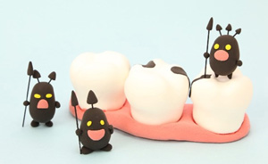

より良い、歯科治療為「セレック治療システム」を導入しました！！速い・丈夫・キレイ・安心！！
＊詳細はこちら
スタッフ募集！ 歯科衛生師さん パート ＊詳細はこちら
New!! 「カッコイイ５０＋を歩く」に掲載された、歯と健康について津江院長が詳しく説明しています。こちらから
院長挨拶
コミュニケーションを大切に！ご要望・お悩みを汲み取り、現状をご説明した上で治療を提供しています。 院長 歯学博士 津江明伸
狛江市岩戸北の「津江歯科医院」は、小田急小田原線「喜多見駅」から徒歩3分の場所にあります。
平日（木曜日を除く）は18時半まで、土曜日も17時半まで診療しているので、ご都合に合わせてご来院ください。
当院は、被せ物・詰め物の治療を得意としています。
マイクロスコープ（歯科用顕微鏡）を使用して患部を拡大しながら繊細な治療を実現しており、こうして作製する被せ物は歯との境目がわからないほどです。
さらに表面を滑らかに仕上げることで、汚れがたまりにくい被せ物を目指しています。
また、矯正やインプラントなど、患者さまの幅広いニーズに対応できるように努めています。
お口のお悩みは、どのようなことでもご相談ください。
スタッフ一同、患者さまのご来院を心よりお待ちしております。
一般歯科

＊歯科用電子顕微鏡
＊詳細はこちら

＊レーザー治療
コアの取れない症例等に使用。
＊詳細はこちら
「歯科医療が未来を変える」
*詳細はこちら

誤嚥肺炎が４割減った
＊詳細はこちら
矯正歯科
矯正歯科治療の症例画像を公開しております。
うけ口・出っ歯・開噛・八重歯
＊詳細はこちら
予防歯科

歯石除去(スケーリング)→ＰＭＴＣ(プロフェッショナル・テクニカル・ティース・クリーニング)→エアフロー
小児歯科

お母様へ今が大事！お子様の将来の健康の為に。
＊詳細はこちら